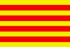

|
Länderinformationen Katalonien
1. Das Wichtigste auf einen Blick2. Sehens- und Hörenswertes
3. Politik & Gesellschaft
4. Schmeckenswertes
5. Medien
6. Reisetipps
1. Wissenswertes
|  | Hallo,
willkommen zu Ihrem Sprachkurs von Sprachlernen24! Um Ihr Interesse
an und Ihre Lust auf Sprache und Land noch mehr zu wecken, haben wir
im Folgenden wichtige und interessante Zahlen und Fakten über
die katalanische Sprache und über Katalonien zusammengetragen. |
 Der
katalanische „Kulturraum“
Der
katalanische „Kulturraum“
Katalonien ist eine Nation ohne Staat. Als „Nation“, betrachtet als kulturelle und sprachliche Einheit, besteht der katalanische „Kulturraum“ nicht nur aus der autonomen spanischen Region Katalonien (Comunidades Autónomas, autonome Gemeinschaften). Neben ihr umfasst er auch die Region Valencia, die Balearischen Inseln, Andorra, Teile Aragoniens sowie das in Südfrankreich gelegene Roussillon (wo die ursprüngliche Sprache der Gegend heute zum großen Teil durch Französisch verdrängt wurde).
 Die
katalanische Sprache und ihre Verbreitung
Die
katalanische Sprache und ihre Verbreitung
Die katalanische Sprache (català) ist eine eigene Sprache und keine Dialektvariante des Spanischen (castellano).
Katalanisch zählt – wie Kastellan auch – zu den romanischen Sprachen und ist eine Weiterentwicklung des Volkslatein (auch als Vulgärlatein oder gesprochenes Latein bekannt). Beide Sprachen werden sogar der gleichen Untergruppe zugerechnet, den iberoromanischen Sprachen, zusammen mit Portugiesisch und Galizisch. Innerhalb dieser Untergruppe nimmt das Katalanische aber eine Sonderstellung ein: Es wird oft als Brückensprache zwischen den beiden romanischen Untergruppen Iberoromanisch und Galloromanisch (Französisch, Provenzalisch und Okzitanisch) bezeichnet.
Die katalanische Sprache wird in Spanien, Andorra, Frankreich und Italien (in der Stadt Alghero auf Sardinien, wo sie zu den Amtssprachen gehört) von mehr als 10 Millionen Menschen gesprochen.
Katalanisch ist Amtssprache nicht nur in Katalonien (eine autonome Region in Spanien mit der oft besuchten Provinz-Hauptstadt Barcelona), sondern auch auf den Balearen (Mallorca, Menorca, Ibiza und Formentera), in Andorra (einem kleinen Staat in den Pyrenäen, dem einzigen Land der Welt, in dem Katalanisch Staatssprache ist) und im größten Teil der autonomen Region Valencia (welche an der Mittelmeerküste die Provinzen Alicante, Castellón und Valencia umfasst). Alle oben genannten Gebiete, zusammen mit Nordkatalonien (Catalunya del Nord, das seit 1659 durch den Pyrenäenfrieden mit Spanien zu Frankreich gehört) und einem Randstreifen Aragons bilden die „Katalanische Nation“.
Ein Wort zu regionalen Varianten des Katalanischen: In Valencia wird Ihnen niemand erzählen, dass er Katalanisch spricht – nein, dort unterhält man sich auf Valencianisch. Gleiches wird Ihnen auf den Balearen passieren: Dort werden Sie hören „also hier sprechen wir Mallorquin“. All diese Varianten, die sich in Aussprache und Wortschatz oft ein bisschen voneinander unterscheiden, sind Dialekte des Katalanischen.
Die
katalanische Sprache und das Kastellan
Die katalanische Sprache hat mehr Ähnlichkeiten mit Okzitanisch in Südfrankreich als mit Kastellan. Die beiden Sprachen unterscheiden sich im Wesentlichen in ihrer Aussprache und im Wortschatz. Auffällig ist auch, dass die katalanische Sprache im Gegensatz zum Kastellan viel weniger Wörter arabischer Herkunft besitzt. Die grammatischen Phänomene dieser Sprachen aber sind in mancher Hinsicht gleich und in vielen Fällen zumindest recht ähnlich. Das heißt, wenn Sie schon etwas „Spanisch“ (Kastellan) können, werden Sie beim Katalanisch-Lernen häufig auf bereits bekannte Strukturen stoßen.
 Die
katalanische Sprache und ihre Geschichte
Die
katalanische Sprache und ihre Geschichte
Das Katalanische entstand – wie alle romanischen Sprachen – aus dem gesprochenen Vulgärlatein und zwar nach dem Sieg der Römer über die Karthager im Jahr 200 v. Chr., der den Einfluss des Römischen Reiches auf die ganze iberische Halbinsel begründete. Lediglich in den westlichen Pyrenäen widerstand man dem Einfluss der römischen Eroberer. Bis heute hat das dort verbreitete Baskisch seine Eigenständigkeit beibehalten und sich allen Veränderungen widersetzt.
Die Römer waren starke Besatzer, die ihre Sprache über massive militärische Präsenz in ihrem ganzen Einflussgebiet verbreiteten. Die dort bislang angesiedelten Sprachen (unter anderem Iberisch, Keltisch und Keltiberisch) wurden vom Latein somit stark beeinflusst.
Wenn wir hier von Latein sprechen, ist nicht das Hoch-Latein gemeint, das Sie vielleicht zu Schulzeiten gelernt haben. Dieses Hoch-Latein wurde damals schon verwendet – allerdings nur als Schriftsprache. Tatsächlich gesprochen wurde das so genannte Vulgär-Latein, das aus der Mischung des Latein mit den anderen lokalen Mundarten im römischen Reich entstand. Latein wurde im ganzen römischen Einflussgebiet von den Besetzten übernommen und mit ihrem eigenen Wortschatz angereichert. Auf diese Art und Weise entwickelten sich alle romanischen Sprachen.
Doch nun zurück zur katalanischen Sprachgeschichte: Seinen Ausgangspunkt nahm das Katalanische zwischen dem 8. und 10. Jahrhundert nach Christus in den Grafschaften des Karolingischen Reichs. Aus dieser Zeit stammt auch die enge (sprach-)verwandtschaftliche Beziehung des Katalanischen mit dem Okzitanischen.
Erste Schriftdokumente in dieser Sprache stammen aus dem 9. Jahrhundert. Aus dem 12. Jahrhundert ist der Predigttext von Homilies d'Organyà erhalten, das erste bis heute bewahrte katalanische Literaturdokument. Es befindet sich übrigens derzeit in der Nationalbibliothek von Katalonien. Homilies d`Organyà verfasste als Erster Texte in der natürlichen Sprache der Katalanen und nicht, wie damals üblich und von der Kirche aus so gewollt, in lateinischer Sprache. Im 12. Jahrhundert tauchte das erste Mal der Begriff Catalonia (Katalonien) auf, als sich Ramon Berenguer III., Graf von Barcelona, in lateinischer Sprache als Catalanicus heroes (katalanischer Held), Rector catalanicus (Herrscher Kataloniens) und Dux catalanensis (Führer Kataloniens) bezeichnet.
Ab dem 13. Jahrhundert erlebte das Katalanische eine frühe Blüte: Bis ins Mittelalter war Katalanisch eine bedeutende europäische Kultursprache. Gesetzestexte, Gedichte und Prosatexte, die in ganz Europa Verbreitung fanden, wurden auf Katalanisch verfasst.
Katalanisch wurde aber auch tatsächlich gesprochen – es war eine echte Volkssprache.
Nach den Predigttexten Homilies d'Organyàs hatte die Literatur in Katalonien das Glück, in Ramon Llull (1232-1316) ihren Begründer und Meister zugleich zu finden. Llulls Entschluss, als sprachliches Medium nicht mehr das Lateinische, sondern die natürliche Sprache des Volkes zu verwenden, hob das Katalanische (30 Jahre früher, als es Dante für das Italienische gelang) endgültig in den Rang einer Literatur- und Wissenschaftssprache.
Bereits durch den katalanischen Königshof und seine Expansion am westlichen Mittelmeerrand nach Süden und auf die Balearen hatte das Katalanische als Schriftsprache an Prestige gewonnen. Dies wurde wahrscheinlich zusätzlich beeinflusst durch das sehr nah verwandte Okzitanische, der Sprache provenzalischer Dichter seit dem 12. Jahrhundert.
Ramon Llull hat über 260 Werke in lateinischer, arabischer und katalanischer Sprache geschrieben, darunter bedeutende katalanische Romane wie Bla(n)querna oder Fèlix o Llibre de meravelles. Die in ihnen enthaltenen literarischen Kostbarkeiten, insbesondere das Llibre d'amic e amat (Buch vom Liebenden und Geliebten) und das Llibre de les bèsties (Buch der Tiere) – in denen sich Llulls Kenntnis der lateinischen und arabischen Tradition, seine Vertrautheit mit der Liebeslyrik der Troubadours und sein großes schöpferisches Genie zeigen – gehören zu den Glanzpunkten mystischer Erzählkunst in Katalonien.
Zu den bedeutenden philosophisch-theologischen Werken Llulls zählt die frühe Art d'atrobar veritat (wörtlich: Die Kunst, Wahrheit zu finden), ein Schlüssel zur genauen Ordnung allen Wissens, eine „Wissenschaft der Wissenschaft“ sozusagen. In seinen späteren Werken entwickelte der Mallorquiner eine neue Methode der Kombinatorik, die bis heute die Logiker fasziniert, mit dem Ziel, alle Menschen noch so verschiedenen Glaubens zu einem gemeinsamen Denkgebäude und einem friedvollen Zusammenleben zu führen. Llulls fundamentales philosophisches Werk ist seine immer wieder neu geschriebene Ars Magna („Die Große Kunst“), die Hunderte von Gelehrten, darunter so hervorragende Denker wie Giordano Bruno, Nikolaus von Kues und Gottfried Wilhelm Leibniz, beeinflusste.
Doch ab dem 15. Jahrhundert erlebte das Katalanische und Katalonien einen Niedergang.
Lange Zeit gab es Rivalitäten zwischen Katalonien und Kastilien. Mit der Heirat Isabellas von Kastilien und Ferdinands von Aragón wurden die beiden Kronen jedoch vereint, ein jahrhundertelanger Abschwung Kataloniens sollte einsetzen.
Im Jahre 1516 wurde das vereinte Katalonien und Kastilien dem großen Habsburger Reich unter Karl I. angeschlossen. Es folgte eine Zeit zahlreicher Aufstände und Unruhen. Der 30-jährige Krieg zwischen Frankreich und Spanien wurde auf katalanischem Gebiet ausgetragen.
Weitere Unruhen gab es in katalonischen Städten selbst. Die Katalanen genossen zwar lange Zeit einen gewissen Grad von Unabhängigkeit, Philipp V. hob jedoch zu Beginn des 18. Jahrhunderts sämtliche Sonderrechte der Katalonier inklusive deren eigener Sprache auf (Decreto de Nueva Planta, 1716).
In Folge des spanischen Erbfolgekrieges (1701-1714, als Kastilien und Frankreich die Verbündeten Katalonien, England und Österreich besiegten) verlor Katalonien seine Unabhängigkeit und wurde 1716 von Kastilien annektiert. Kastellan (Spanisch) verdrängte Katalanisch aus allen öffentlichen Bereichen. Natürlich lehnten sich die Einwohner Barcelonas gegen diese Unterdrückung vehement auf. Von der heutigen Burg aus wurde die aufständische Bevölkerung jedoch in Schach gehalten.
Erst zu Mitte des 19. Jahrhunderts setzte eine erneute Blüte der Sprache ein, die jedoch unter der Diktatur Francos ein schnelles und jähes Ende fand: Die Katalanen waren und sind ein sehr stolzes und patriotisches Volk mit individuellen Traditionen und eigener Kultur, die sie vom kastellanischen Spanien unterscheiden. Viele Katalanen sehen Katalonien als eine von Spanien eigenständige Region. Obwohl es in Spanien liegt, hat man über 150 Jahre lang für ein unabhängiges Katalonien geworben. Für den spanischen
Diktator Franco, der 30 Jahre lang (von den späten vierziger Jahren bis 1975) herrschte, stellten die Katalanen eine Bedrohung dar. Ihr Wunsch nach Unabhängigkeit und ihr tiefer nationaler Stolz wurden von Franco als Gefahr für die Einheit des Staates betrachtet. Deshalb versuchte er, die katalanische Kultur zu unterdrücken. So durften Medien keine Informationen auf Katalanisch verbreiten, es war verboten, Telegramme auf Katalanisch zu verfassen und auch auf allen Straßenschildern und Werbeplakaten fand man Kastellan. Zum Glück aber gelang es ihm nicht, Katalanisch zum Aussterben zu bringen: In den Familien, also außerhalb des öffentlichen Raums, wurde weiter Katalanisch gesprochen und die Sprache gepflegt und weitergegeben.
Nach dem Ende der Franco-Diktatur und mit der Autonomie Kataloniens und Valencias in den 80er Jahren begann ein neuerlicher Aufschwung des Katalanischen. Vor allem zwischen 1983 und 1986 wurden entsprechende Gesetze zur Förderung der katalanischen Sprache verabschiedet. Die Umbenennung der Ortsnamen wurde rückgängig gemacht. Es erschienen Tages- und Wochenzeitungen auf Katalanisch, Radio und Fernsehen sendeten in katalanischer Sprache und auch der Unterricht an den Schulen wurde auf Katalanisch abgehalten. So ist es heute beispielsweise auch so, dass man Kenntnisse der katalanischen Sprache nachweisen muss, um im öffentlichen Dienst in Katalonien eine Anstellung zu finden. Denn in Katalonien wird die katalanische Sprache als Identitätsmerkmal Kataloniens und der Balearen gesehen.
Durch eine Volksabstimmung im Jahre 2006 wurde ein neuer Autonomiestatus angenommen, in dessen Präambel sich Katalonien als „Nation“ bezeichnet. Für die zentralistisch orientierten Kritiker der nationalen Eigenständigkeit einzelner Autonomer Regionen Spaniens ist der Begriff der „Nation“ weiterhin an die staatliche Souveränität eines Gemeinwesens gebunden und damit allein dem spanischen Gesamtstaat vorbehalten. Der Kampf der Katalanen für die Erhaltung ihrer Kultur oder sogar ihrer Unabhängigkeit von Spanien geht also weiter.
 Die
Aussprache und Schrift des Katalanischen
Die
Aussprache und Schrift des Katalanischen
Die Aussprache des Katalanischen gehört zu den großen Schwierigkeiten dieser Sprache, da ein Buchstabe im Schriftbild nicht immer auf dieselbe Art und Weise gesprochen wird.
Veränderungen ergeben sich dabei je nach Position innerhalb des Wortes und bei den Vokalen je nach Wortbetonung und Dialekt.
Im Folgenden wollen wir Ihnen die Aussprache des Katalanischen und seine Besonderheiten ganz systematisch aufzeigen. Sie lernen zuerst die Aussprache der Vokale. Anschließend wird die Aussprache der Konsonanten systematisch aufgearbeitet.
Die
Aussprache der Vokale im Katalanischen
In der katalanischen Aussprache gibt es acht Vokale, für die es schriftlich allerdings nur fünf Buchstaben gibt. Das heißt, derselbe Buchstabe kann – je nach Betonung – anders ausgesprochen werden:
Buchstabe |
betont/unbetont |
Aussprache |
Beispiel |
a |
betont |
a
(wie im dt. Wort Afrika) |
el
mar
– das Meer |
unbetont |
ə
(Vokal
zwischen a und e) |
la
cama
[lə
kamə]
- das Bein |
|
e |
betont |
e
(geschlossen) (wie e
im dt. Wort Meer) |
més
[meß] - mehr |
betont |
ε
(offen) |
el
cafè
[əl
cəfε]
– der Kaffee |
|
unbetont |
ə
(Vokal zwischen a und e) |
la
mare
[lə
marə]
- die Mutter |
|
i |
betont/unbetont |
i |
el
dimarts
– der Dienstag |
o |
betont |
o-geschlossen |
l’avió
- das Flugzeug |
betont |
å-offen
|
però
[perå]
- aber |
|
unbetont |
u |
el
color
[əl
kuló]
- die Farbe |
|
u |
betont/unbetont |
u |
l’autobús
- der Bus |
Die
Aussprache der Konsonanten I
: c, g, h und
j
j
Hier haben wir für Sie wichtige Regeln zur Aussprache der Konsonanten im Katalanischen aufgelistet. Wir haben diese Erklärungen in zwei Abschnitte unterteilt, da es hierzu mehrere Regeln gibt.
In diesem ersten Abschnitt lernen Sie die Regeln zur Aussprache des c, des g, des h und des j.
Um Ihnen das Lernen zu erleichtern, finden Sie zu den meisten Regeln auch Beispiele mit der jeweiligen Lautschrift.
1. Aussprache des Buchstaben c
Der Buchstabe c wird vor i und e wie ein stimmloses s [ß] gesprochen, so wie im Deutschen das doppelte s in Messer.
Beispiele: |
|
el
cendrer [əl
ßəndre] |
der
Aschenbecher |
la
cigarreta [lə
ßigərrεtə] |
die
Zigarette |
Vor den Vokalen o, a und u wird c wie [k] ausgesprochen und entspricht dem deutschen Laut [k] in Katze.
Beispiele: |
|
la
casa [lə
kasə] |
das
Haus |
el
conte [əl
kontə] |
das
Märchen |
el
cuc [əl
kuk] |
der
Wurm |
2. Aussprache des Buchstaben g
Das g wird vor o, a und u wie [g] im deutschen Wort grün gesprochen.
Beispiele: |
|
el
got [əl
gåt] |
das
Glas |
el
gat [əl
gat] |
die
Katze |
la
beguda [lə
bəgudə] |
das
Getränk |
Vor e und i wird g jedoch wie im Französischen zu einem Reibelaut [ʒ], der im Deutschen nur in Fremdwörtern auftritt. Als Beispiel kann hier das zweite g im Wort Garage dienen.
Beispiele: |
|
la
gent [lə
ʒen] |
die
Leute |
fràgil
[fraʒil] |
zerbrechlich |
Endet nun ein Verb z.B. auf -car, so muss vor einer Personalendung, die mit e beginnt, der Laut [k] durch die Schreibung qu repräsentiert werden. Im Fall einer Endung auf -gar müsste die Schreibung gu gewählt werden. Das eingefügte u wird hier nicht ausgesprochen, sondern zeigt lediglich an, dass g nicht wie normalerweise vor einem e gesprochen werden darf (vgl. das Beispiel garatge).
Beispiele: |
|
trucar
[truka] |
anklopfen
/ anrufen |
tu
truques [tu tru
du
klopfst an / du rufst an | |
pagar
[pəga] |
bezahlen |
nosaltres
paguem [nusaltrəß
pəgem] |
wir
bezahlen |
3. Aussprache der Buchstaben j und ç
Die Buchstaben j (ʒ ausgesprochen) und ç (ß ausgesprochen) existieren nur vor a, o und u.
Beispiele: |
|
el
pijama [əl
piʒamə] |
der
Pyjama |
jo
[ʒå] |
ich |
el
juliol [əl
ʒuliål] |
der
Juli |
la
plaça [lə
plaßə] |
der
Platz |
la
cançó [lə
kənßo] |
das
Lied |
el
forçut
[əl
fursut] |
der
sehr starke Mann |
Vor i und e werden sie durch g und c ersetzt.
Beispiele: |
|
les
places [ləs
plaßəs] |
die
Plätze |
començar
[kumənßa] |
anfangen |
jo
començo [ʒå kumenßu] |
ich
fange an |
tu
comences [tu kumenßəß] |
du
fängst an |
que
jo comenci [kə
ʒå kumenßi] |
dass
ich anfange (Form des Subjunktiv) |
la
pluja [lə
pluʒə] |
der
Regen |
les
pluges [ləs
pluʒəß] |
„die
Regen“ (Pluralform), die Regenschauer |
envejar
[əmbəʒa] |
beneiden |
jo
envejo [ʒå-əmbeʒu] |
ich
beneide |
tu
enveges [tu-əmbeʒəß] |
du
beneidest |
que
jo envegi [ke ʒå-əmbeʒi] |
dass
ich beneide (Form des Subjunktiv) |
Das ç kann auch am Ende eines Wortes erscheinen:
Beispiele: |
|
feliç
[fəliß] |
glücklich |
dolç
[dolß] |
süß |
4. Aussprache des Buchstaben h
Der Buchstabe h wird nie ausgesprochen:
Beispiele: |
|
l’hora
(f) [lårə] |
die
Stunde |
l’home
(m) [låmə] |
der
Mann |
Die
Aussprache der Konsonanten II: r, s, v und
x
x
1. Aussprache des Buchstaben r
Der Buchstabe r wird im Katalanischen gerollt. Es kann einfach oder mehrfach gerollt werden.
Einfach gerollt wird nach allen Konsonanten außer l, m und n.
Beispiele: |
|
trist
[trist] |
traurig |
el
sobre [əl
sobrə] |
der
Umschlag |
el
preu [əl
prεw] |
der
Preis |
Mehrfach gerollt wird am Anfang des Wortes oder nach l, m und n.
Beispiele: |
|
la
ràdio [lə
rradiw] |
das
Radio |
l’enrenou
(m) [lənrrənow] |
das
Durcheinander |
Zwischen Vokalen kann das r einfach oder mehrfach gerollt werden. In diesem Fall werden beide Möglichkeiten graphisch unterschieden: Einfach gerollte Laute werden mit einem r, mehrfach gerollte Laute werden mit rr geschrieben:
Beispiele: |
|
la
cara [lə
karə] |
das
Gesicht |
la
cirera [lə
ßirerə] |
die
Kirsche |
Anglaterra
[ənglətεrrə] |
England |
córrer
[korrə] |
rennen |
Der Buchstabe r wird normalerweise am Ende des Wortes nicht ausgesprochen:
Beispiele: |
|
cantar
[kənta] |
singen |
primer
[prime] |
erste
|
el
pintor [əl
pinto] |
der
Maler |
el
senyor [əl
ßəño] |
der
Herr |
Bitte beachten Sie, dass es aber auch einige Ausnahmen zu diesen Aussprache-Regeln gibt. Diese sind:
Ausnahmen: |
|
l’amor
[ləmor] |
die
Liebe |
el
cor [əl
kår] |
das
Herz |
el
tresor [əl
trəsor] |
der
Schatz |
el
favor [əl
fəbor] |
der
Gefallen |
2. Aussprache des Buchstaben s
Wie im Deutschen kann das s stimmhaft (wie bei sauer) oder stimmlos (wie bei Essen) ausgesprochen werden.
Am Anfang und am Ende des Wortes und neben jedem Konsonanten wird das stimmlose s mit s geschrieben:
Beispiele: |
|
la
sal [lə
ßal] |
das
Salz |
el
sucre [əl
ßukrə] |
der
Zucker |
dos
[doß] |
zwei |
la
tos [lə
toß] |
der
Husten |
la
pasta [lə
paßtə] |
die
Nudeln |
pescar
[pəßka] |
fischen,
angeln |
Zwischen Vokalen wird das stimmlose s immer mit ss geschrieben:
Beispiele: |
|
el
mosso [əl
moßu]
|
der
Bursche, der katalanische Polizist |
la
bossa [lə
boßə] |
die
Tüte |
Dagegen wird das stimmhafte s zwischen zwei Vokalen mit s geschrieben:
Beispiele: |
|
la
rosa [lə
råsə] |
die
Rose |
la
cosa [lə
kåsə] |
das
Ding |
Das stimmhafte s wird am Anfang des Wortes und neben Konsonant mit z geschrieben:
Beispiele: |
|
la
zona [lə
sonə] |
die
Zone |
la
zebra [lə
sebrə] |
das
Zebra |
el
colze [əl
kolsə] |
der
Ellbogen |
3. Aussprache des Buchstaben v
Der Buchstabe v wird vorwiegend als [b] ausgesprochen; in einigen Dialekten wird er auch [v] (wie beim deutschen Wein) ausgesprochen. Beide Möglichkeiten sind korrekt.
Beispiele: |
|
el
vi [əl
bi/əl
vi] |
der
Wein |
el
cava [əl
kabə/əl
kavə] |
der
Cava (katalanischer Sekt) |
Bitte beachten Sie:
Einige Konsonanten werden je nach dem folgenden Vokal verschieden ausgesprochen. Betroffen sind hiervon in erster Linie die Konsonanten c, ç, g und j.
4. Aussprache des Buchstaben x
Der Buchstabe x wird normalerweise als [ks] gesprochen:
Beispiele: |
|
el
taxi [əl
takßi] |
das
Taxi |
l’experiència
[ləkspəriεnßiə] |
die
Erfahrung |
Zwischen Vokalen wird er stimmhaft [gs] ausgesprochen:
Beispiele: |
|
l’examen
[ləgsamən] |
die
Prüfung |
exacte
[əgsaktə] |
genau |
Im Katalanischen gibt es Dopplungen und Kombinationen bestimmter Konsonanten, deren Aussprache Sie extra lernen sollten.
Die
Aussprache der Konsonanten III: Die
Aussprache der doppelten
Konsonanten und
bestimmter Konsonantenkombinationen
Aussprache der doppelten Konsonanten und
bestimmter Konsonantenkombinationen
In der katalanischen Sprache gibt es eine Reihe von doppelten Konsonanten und Konsonantenkombinationen, die eine besondere Aussprache haben.
1. Die Konsonantenkombination ny wird wie die italienische Kombination gn in Bologna oder das spanische ñ ausgeprochen.
Beispiele: |
|
Catalunya
[kətəluñə] |
Katalonien |
l’any
[lañ] |
das
Jahr |
2. Der Doppelkonsonant ll
Das ll wird in manchen Fällen weich ausgesprochen, wie das italienische -gli- in Cagliari.
Beispiele: |
|
la
paella [lə
pəeljə] |
die
Pfanne, eine Pfanne Reis |
el
segell [əl
ßəʒelj] |
die
Briefmarke |
In anderen Fällen spricht man l·l als ein langes laus.
Beispiele: |
|
la
pel·lícula [lə pəl·likulə] |
der
Film |
l’al·lèrgia
[ləl·lεrʒiə] |
die
Allergie |
3. Die Kombination tx wird als tsch ausgesprochen.
Beispiele: |
|
el
cotxe [əl kotschə] |
das
Auto |
la
butxaca [lə butschakə] |
die
(Hosen-)Tasche |
4. Die Buchstabenkombination -ix- zwischen Vokalen oder am Ende des Wortes wird als sch ausgesprochen.
Beispiele: |
|
la
caixa [lə kaʃə] |
die
Kiste, die Kasse, die Sparkasse |
el
peix [əl peʃ] |
der
Fisch |
baix
[baʃ] |
niedrig |
5. Das -ig wird am Ende des Wortes wird als –tsch ausgesprochen.
Beispiele: |
|
el
mig [mitsch] |
die
Mitte |
el
desig [əl dəsitsch] |
der
Wunsch |
Aber dieser Sprachkurs wird Ihnen dabei helfen die Aussprache des Katalanischen schnell zu lernen, denn alles wurde von Muttersprachlern aufgezeichnet und Sie können es sich wieder und wieder anhören.
Wir wünschen Ihnen nun eine unterhaltsame und informative Lektüre, wenn wir Ihnen im Folgenden Katalonien und seine Menschen näher vorstellen möchten.
 Einwohner
Einwohner
In Katalonien leben etwa 7 Millionen Einwohner.
Wenn man als „katalanische Länder“ auch die Balearen, die Region Valencia, Andorra und die Grenzgebiete, in denen katalanische Dialekte gesprochen werden, mit einbezieht, kommt man auf fast 12 Millionen Katalanen. Dies würde mehr Einwohner ausmachen als in Griechenland oder Portugal, obwohl man auch beachten muss, dass ein Teil das Katalanische nicht wirklich sprechen kann.
 Zeitzone
Zeitzone
Die katalanische „Kulturraum“ liegt in der selben Zeitzone wie Deutschland, Österreich und die Schweiz. Ebenfalls wird in allen diesen Ländern im Frühling auf Sommerzeit umgestellt.
 Wirtschaft
Wirtschaft
Katalonien gehört nach Madrid und Navarra zu den wirtschaftlich stärksten autonomen Gemeinschaften Spaniens und ist eine der am frühesten industrialisierten Regionen Europas. Es war die einzige Gegend auf der Iberischen Halbinsel bzw. im westlichen Mittelmeerraum, die bereits im 19. Jahrhundert ihre industrielle Revolution herbeiführte. Seitdem wurden beachtliche Industrien in Katalonien aufgebaut. Bedeutende darunter sind Textilien, Chemie, Elektronik, Nahrungsmittel, Pharmazeutika und der Automobilbau; die Marke Seat zum Beispiel wird hauptsächlich hier produziert.
Neben dieser Industriebasis hat sich ein weit diversifizierter, tertiärer Sektor entwickelt mit besonderem Schwerpunkt auf Dienstleistungen für Unternehmen.
Im Agrarsektor dominiert in Katalonien der Anbau von Wein. Nach Frankreich ist Katalonien der bedeutendste Produzent und Exporteur von Sekt. Bedeutungswert sind auch Produkte wie frische Früchte, Schweinefleisch und Fleisch-Nebenprodukte. Der Hafen von Barcelona ist außerdem einer der größten Mittelmeerhäfen und zudem der größte Hafen Spaniens.
Ein weiterer wichtiger Wirtschaftszweig Kataloniens ist natürlich der Tourismus mit mehr als 15 Millionen Besuchern jährlich. Beliebte Ferienziele sind hier die Costa Brava (die „wilde Küste“) mit zahlreichen sandigen kleinen Buchten im Norden von Katalonien und die Costa Daurada (die „goldene Küste“) mit weiten Sandstränden im Süden.
Wenn man Katalonien bereist, gibt es auch in kulinarischer Hinsicht viel zu entdecken mit seinen Spitzenprodukten und traditionellen Gerichten.
Von den Fischbörsen der Costa Brava, den Handwerkskäsereien der Pyrenäen und den Weinkellern des Penedès über die Frühlingszwiebeln aus Valls bis hin zu den kleinen Wurstläden von Osona gibt es eine ganze kulinarische Welt zu entdecken.
Im nächsten Kapitel finden Sie interessante Empfehlungen zu Kultur, Urlaubszielen und vielem anderen mehr.